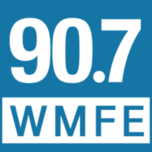
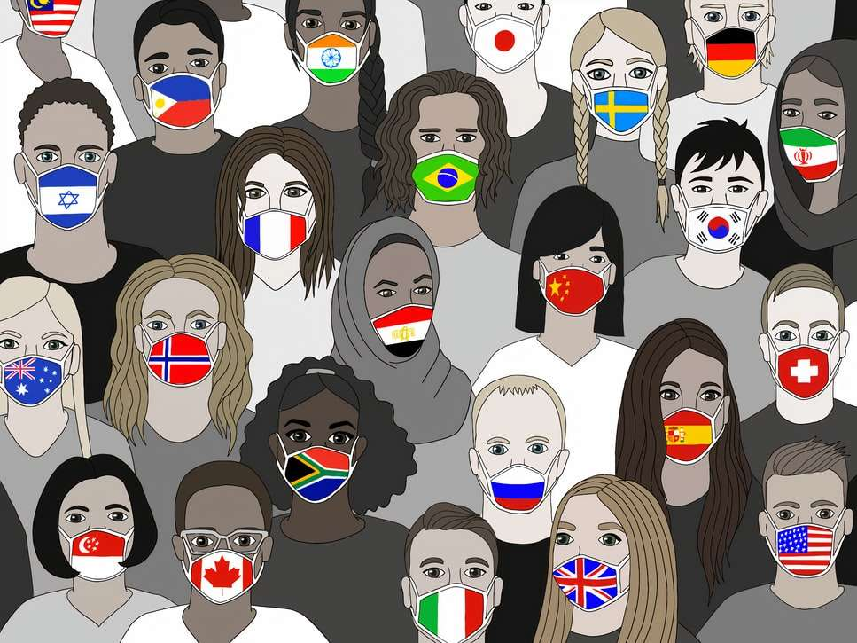
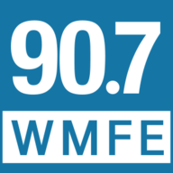
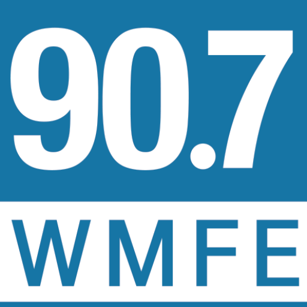

Orange County Will Begin to Phase Out Its Face Mask Mandate, Social Distancing Requirements

Mayor Jerry Demings says the decision of when and how to reduce these protocols will be made based on CDC guidelines and in consultation with health experts.
Demings says the fact that more than 50 percent of people 40 and older in the county have been vaccinated means the timing is right to rethink these policies.
'We knew that we would not be in this phase forever where we would be requiring people to needlessly wear facial coverings.'
Demings says reducing these safety measures shouldn’t detract from tourists visiting the area.
'But with the experiment of the NBA bubble and the MLS soccer and all of those things that were done here in this community, I believe that through those occurrences we have learned some things from it.And our businesses reopened with a plan of action.'
Demings says the first phase might include reducing face masks and social distancing requirements at restaurants and capacity limits at outdoor venues.
He says that does not mean that no one will be required to wear facial coverings, adding the county is a few months away from that.
Posted On: 2021-04-12T00:00:00
Posted By: Danielle Prieur



Content Date: 2021-04-12
Download Date: 2021-04-21
Document ID: L0C04AS8W